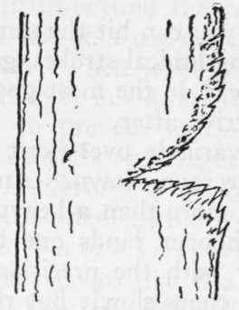
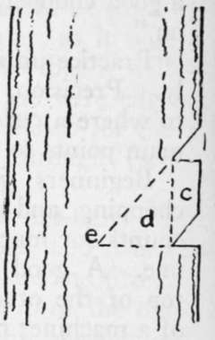
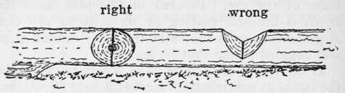

Axemanship. Qualities And Utilization Of Wood. Part 2
Description
This section is from the book "Camping And Woodcraft", by Horace Kephart. Also available from Amazon: Camping and Woodcraft.
Axemanship. Qualities And Utilization Of Wood. Part 2
Fig. 36. Felling Tree.
Fig. 37. Boggled Notch.
Fig. 38. True Notch.
Now, suppose you decide to throw the tree to the south. First cut a notch (kerf) on the south side of the tree, half way through the trunk (A in Fig. 36). A novice would make this notch by starting with a small nick and laboriously enlarging it by whacking out from the upper side one layer of chips after another. Soon he would be driving his axe in at too sharp an angle, and his work would grow harder and harder as he got to cutting more and more nearly straight across the grain (Fig. 37). Finally the inside of the notch would get so narrow that he would wedge his axe fast. The right way is shown in Fig. 38. Make a nick at a as guide then another at b, a little higher above a than half the thickness of the tree. Chop alternately at these notches, and split out the block c with a downward blow of the axe. Proceed in this way until the notch is finished, making as big chips as you can. A green axeman is known by the finely minced chips and haggled stump that he leaves.
If the tree is of such wood as is easy to cut, make the cut ae as nearly square across the butt as you can. To do this keep the hand that holds the hilt of the axe-helve well down. But if the tree is hard and stubborn to fell, or if you are rustling firewood in a hurry, it is easier to make this cut in a slanting direction, so as not to chop squarely across the grain, and then make the opposite one diagonally across it.
Having finished this south kerf (which is two-thirds the labor of felling the tree), now begin the opposite one, b, at a point three or four inches higher than the other. By studying the diagram, and taking into account the tree's great weight, you can see why this method will infallibly throw the tree where you want it, if it stands anywhere near perpendicular, and if there is not a contrary wind blowing. Comparatively few blows are needed here. When the tree begins to crack, step to one side. Never jump in a direction opposite that in which the tree falls. Many a man has been killed in that way. Sometimes a falling tree, striking against one of its neighbors, shoots backward from the stump like lightning. Look out, too, for shattered limbs.
If a tree leans in the wrong direction for your purpose, insert a billet of wood in the kerf B. and drive a wedge or two above it in the direction of the kerf. A tree weighing many tons can be forced to fall in any desired direction by the proper use of wedges; and a good axeman, in open woods, can throw a tree with such accuracy as to drive a stake previously stuck in the ground at an agreed position. He can even do this when a considerable wind is blowing, by watching the sway of the tree and striking his final blow at the right moment.
Logging Up
When the tree is down, trim off the branches for firewood, if the stuff is good for fuel (on the fuel values of trees see Vol. I., pp. 236-239). Then log up the trunk. When a novice tries to cut a log in two he stands in front of it and chops on the farther side until he has most of it and a good part of the top hacked out. Then he realizes that he is "up against it," for he cannot turn the tree over to get at the under side. The axeman must stand on the prostrate trunk, with his legs well apart, and cut down between his feet. This, to a beginner, looks like a risky performance; yet I have seen* one of my woodland neighbors, who professes to be "only a triflin' hand with an axe," stand on a slender tree-trunk that was balanced about ten feet over a gulch, whack away between his feet, with the trunk swaying several inches at every stroke, nor did he step over on the main trunk until two or three light "draw cuts" sufficed to cut the end log free. But such a performance is tame compared with the feats of axemanship that regular choppers and river drivers do every day as a mere matter of course.
Fig. 39. Logging Up.
Make the outside chip not less in length than the diameter of the log. This will seem absurdly long, until you have struggled futilely to "nigger" a log in two. Make two outside nicks, as in felling a tree, split out the block between them, and so go on, making big chips, and cutting at a considerable angle to the grain of the wood instead of across it. Chop straight down, so that when you get to the center of the trunk the bottom of your kerf will be perpendicular (Fig. 39). Usually the trunk is held a little off the ground by broken limbs on the under side of the top. If not, then, when you work close to the ground, look out for pebbles (rather scrape them away beforehand). A nick in the axe will make your work doubly hard. Before felling a tree on stony ground it is well worth while to place a small log across the way for the butt of the tree to fall on, so as to keep it off the ground.
Speaking of nicks in the axe, beware of cutting into hemlock or balsam knots; in trimming limbs close to such trees you can ruin the best steel that ever was made, for they are almost as hard as glass If it must be done, strike gentle blows; hold tht axe-head exactly perpendicular to the spot struck, and rigid, so it cannot glance in the least. The trick is similar to that of driving a bowie through a silver dollar without spoiling the knife's edge.
Having cut one notch half through the trunk, go on to the next ones until the end piece is reached; then turn around and work back until all cuts have been severed.
In working up crooked branches into firewood lengths, have something solid under the spot to be cut. If you don't, sometime a billet will fly up and hit you in the face. I have seen more than one man who had lost an eye in that way.
Continue to:
- prev: Chapter XII. Axemanship. Qualities And Utilization Of Wood
- Table of Contents
- next: Axemanship. Qualities And Utilization Of Wood. Part 3